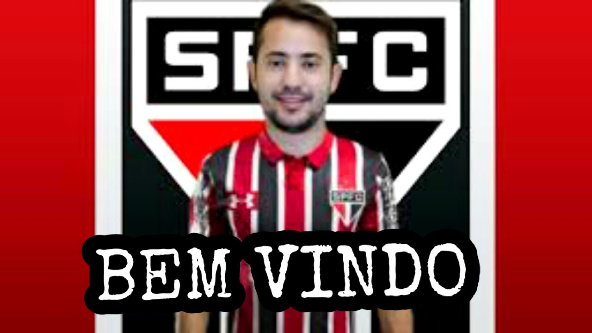
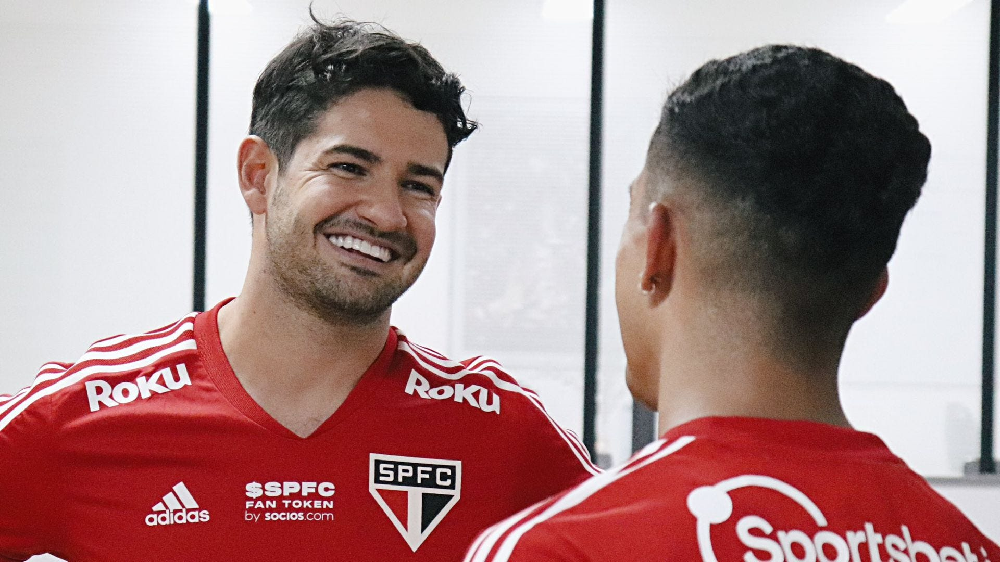

Everton Ribeiro é especulado no Tricolor Paulista
Dois clubes do Brasil estão monitoram a situação de Everton Ribeiro no Flamengo. O meia tem contrato com o Rubro-Negro até o fim de 2023 e pode assinar pré-contrato com qualquer equipe a partir do meio do ano. O São Paulo chegou a ser apontado como um dos interessados.
Ver mais

Lucas Moura pode voltar ao São Paulo FC
Antigo sonho do São Paulo, Lucas Moura não vai prorrogar seu contrato com o Tottenham, que termina em junho.
Porém, a informação não anima a diretoria tricolor em relação a contar com o jogador a partir de julho, quando ele já poderá ser inscrito por outra equipe.
Conforme apurou a coluna, a direção são-paulina trabalha com a informação de que o meia-atacante pretende ficar pelo menos mais uma temporada na Europa.
Por isso, depois de a não prorrogação do compromisso ter sido noticiada nesta quarta (11), inicialmente pela imprensa inglesa, o clube do Morumbi não procurou o atleta.
A notícia da não extensão do vínculo não pegou de surpresa a diretoria do clube do Morumbi.
Ver mais

Marcos Paulo fica ou sai? Clima ruim e propostas podem mudar futuro do jogador no São Paulo
Desde a bronca ríspida de Rogério Ceni na última quarta-feira, Marcos Paulo e São Paulo tentam aparar arestas e tranquilizar o pesado ambiente do CT da Barra Funda.
Esse cenário de clima ruim desde o ocorrido joga contra o desejo do meia-atacante de permanecer no Tricolor até o fim do empréstimo, em dezembro de 2023.
Com o ocorrido e as poucas chances, só cinco na temporada, possíveis propostas serão consideradas, algo descartado antes do episódio.
Caso sejam interessantes para as duas partes (São Paulo e Marcos Paulo), o estafe do atleta não descarta abrir diálogo e conta com aval para isso. O meia-atacante pertence ao Atlético de Madrid, da Espanha.
Ainda não houve proposta pelo jogador de 22 anos, que viajou para o Rio de Janeiro neste fim de semana para resolver problemas pessoais.
O elenco do São Paulo retorna ao trabalho na segunda-feira, dando sequência às atividades de preparação para o restante da temporada.
Ver mais

Alexandre Pato é o novo reforço do São Paulo Fc
Alexandre Pato está de volta ao Tricolor! Nesta sexta-feira (26),
o atacante de 33 anos de idade assinou contrato até 31 de dezembro de 2023, com cláusulas de produtividade,
e iniciará a sua terceira passagem pelo clube.
Ver mais